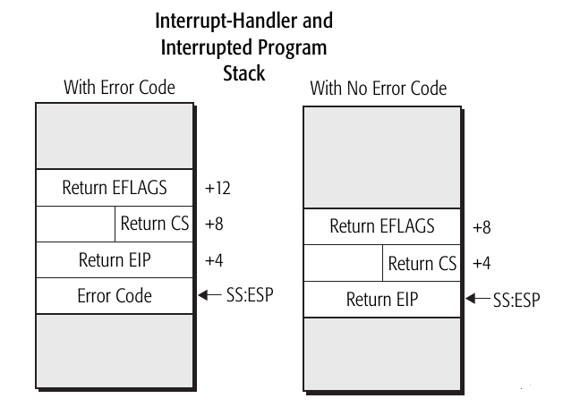

public: True class: center, middle # 分时多任务 蒋炎岩 <jyy@nju.edu.cn> 南京大学计算机软件研究所 --- # 概述 本来这部分内容是oslab的一部分…… > 回想yzh设立PA的本意就是为OS做准备，就把一些内容挪到ICS里了 ---- 计算机系统里最精彩的hacking之一——我们只有一个处理器，但为什么能.red[同时]运行很多程序呢？ * CTE的x86实现 * 分时多任务 --- class: center, middle # CTE的x86实现 --- # CTE API ```c int _cte_init(_Context*(*handler)(_Event, _Context*)); // 初始化 _Context *_kcontext(_Area stack, void (*entry)(void *), void *arg); // ??? void _yield(); // int $0x81 int _intr_read(); // 读取IF void _intr_write(int enable); // 写入IF ``` * yield帮大家实现好了，一条内嵌汇编 (`int $0x80`) * 写IF是非常简单的(cli/sti指令) * 读IF是比较麻烦的 * 接下来就是理解什么是Context (上下文) --- # 时钟中断到来 处理器的行为：如果IF = 1，在某条指令执行完毕后 * 将必要的信息保存到堆栈上 (为什么是EIP, CS, EFLAGS?) * 跳转到IDT[#INT]中的指定地址(irq0) .center[] --- # 时钟中断处理 一段非常难以理解的代码： ```assembly irq0: pushl $0; pushl $32; jmp asm_trap asm_trap: pushal pushl $0 pushl %esp # 此处有黑人问号 call irq_handle addl $8, %esp popal addl $8, %esp iret ``` 试着回答以下问题： * `irq0`中push的0和32分别代表什么？ * `asm_trap`在call `irq_handle` (C函数)的时候，堆栈里有什么？ * `irq_handle`得到了怎样的参数？ --- # 调用到达C代码 你现在就知道，`_Context`应该怎样定义了！ > tf is “trap frame” ```c _Context* irq_handle(_Context *tf) { _Context *next = tf; if (user_handler) { _Event ev = {0}; switch (tf->irq) { default: ev.event = _EVENT_ERROR; break; } next = user_handler(ev, tf); if (next == NULL) { next = tf; } } return next; } ``` --- # 中断返回 假设`user_handler`返回`NULL`，`irq_handle`原封不动返回`tf`： ```assembly ... call irq_handle # %eax = tf addl $8, %esp popal addl $8, %esp iret ``` .red[iret执行完后，发生了什么？] --- # 中断实现了什么？ 一个程序<math>P</math>，只要IF = 1，无论它在运行什么，中断到来以后都会发生 * 硬件保存CS, EIP, EFLAGS * 跳转到一个预设的函数，push中断号，跳转到asm_trap * 保存所有寄存器到堆栈 * 调用C函数，这个函数可以执行任何代码 * C函数返回后，使<math>P</math>继续执行 ---- 如果中断处理程序不改变<math>P</math>的.red[状态] (tf指向的区域、<math>P</math>的代码、数据、堆栈)，<math>P</math>完全不会感受到中断的存在 --- # 理解CTE API ```c int _cte_init(_Context*(*handler)(_Event, _Context*)); _Context *_kcontext(_Area stack, void (*entry)(void *), void *arg); ``` - 初始化CTE的时候，注册一个callback (回调函数)，帮助你得到context - kcontext初始化一个新的context，从entry开始执行，并且entry有一个参数arg - .red[应该如何初始化？] ← 逐条指令考虑中断返回